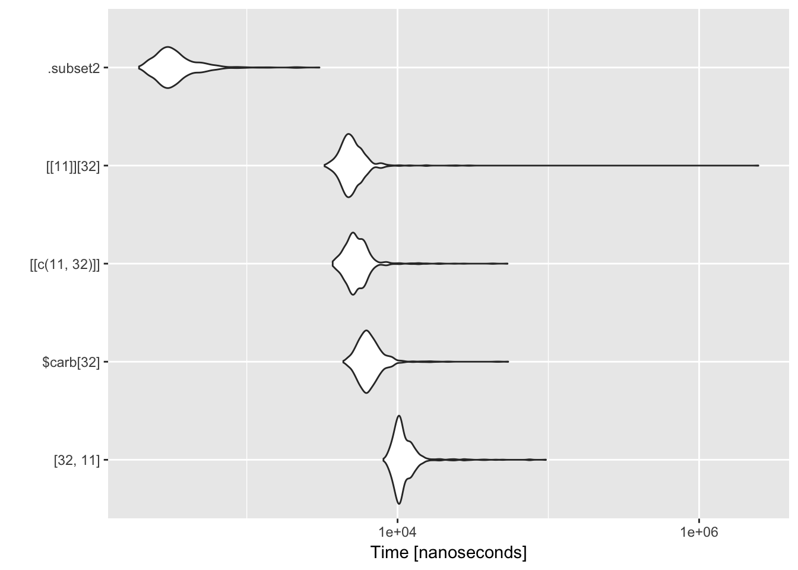

Chapter 4 Optimization
In this Chapter, we will see how to measure and improve code performance.
4.1 Measuring performance
4.1.1 Benchmarking
Reading: http://adv-r.had.co.nz/Performance.html#microbenchmarking
There are several ways to benchmark code (see http://www.alexejgossmann.com/benchmarking_r/) from system.time to dedicated packages such as rbenchmark (Kusnierczyk (2012)) or microbenchmark (Mersmann (2015)).
Let’s start with an example from Wickham (2014).
library(microbenchmark)
m <- microbenchmark(
times = 1000, # default is 100
"[32, 11]" = mtcars[32, 11],
"$carb[32]" = mtcars$carb[32],
"[[c(11, 32)]]" = mtcars[[c(11, 32)]],
"[[11]][32]" = mtcars[[11]][32],
".subset2" = .subset2(mtcars, 11)[32]
)
m## Unit: nanoseconds
## expr min lq mean median uq max neval
## [32, 11] 8211 9771.0 11678.599 10525.5 11608.0 108388 1000
## $carb[32] 4371 5620.0 6793.075 6287.5 7025.5 76405 1000
## [[c(11, 32)]] 3650 4675.5 5558.161 5159.0 5934.5 77672 1000
## [[11]][32] 3413 4352.5 118444.157 4890.5 5695.5 112625024 1000
## .subset2 212 277.0 388.084 313.5 381.5 10148 1000ggplot2::autoplot(m)
4.1.2 Profiling and optimization
Reading: http://adv-r.had.co.nz/Profiling.html#measure-perf
Let’s compare three ways of estimating a linear regression: with built-in lm and with two functions we defined in package Linreg in Chapter 3.
data(cats, package = "MASS")
fit1 <- lm(Hwt ~ Bwt, data = cats)
fit2 <- linmod(Hwt ~ Bwt, data = cats)
fit3 <- linmodEst(cbind(1, cats$Bwt), cats$Hwt)
all.equal(round(coef(fit1), 5), round(coef(fit2), 5))## [1] TRUEall.equal(round(coef(fit1), 5), round(fit3$coefficients, 5), check.names = FALSE)## [1] TRUEm <- microbenchmark(
fit1 <- lm(Hwt ~ Bwt, data = cats),
fit2 <- linmod(Hwt ~ Bwt, data = cats),
fit3 <- linmodEst(cbind(1, cats$Bwt), cats$Hwt)
# custom checks can be performed with the 'check' argument
)
m## Unit: microseconds
## expr min lq mean
## fit1 <- lm(Hwt ~ Bwt, data = cats) 645.027 699.8745 842.3636
## fit2 <- linmod(Hwt ~ Bwt, data = cats) 554.704 594.4945 719.0150
## fit3 <- linmodEst(cbind(1, cats$Bwt), cats$Hwt) 98.991 115.3390 196.1832
## median uq max neval
## 749.0580 856.355 2115.206 100
## 635.6995 721.811 2105.377 100
## 125.5670 141.662 4040.441 100ggplot2::autoplot(m)
4.2 Improving performance
Vectorize
Parallelize
Use a faster language (C/C++, Fortran, …)
Use different tools (as in Chapter 6)
4.3 Vectorization
Let’s take an example from a blog post (that seems to be gone). It’s used in Wickham (2014, Section Case studies).
vacc1a <- function(age, female, ily) {
p <- 0.25 + 0.3 * 1 / (1 - exp(0.04 * age)) + 0.1 * ily
p <- p * if (female) 1.25 else 0.75
p <- max(0, p)
p <- min(1, p)
p
}
set.seed(1959)
n <- 1000
age <- rnorm(n, mean = 50, sd = 10)
female <- sample(c(T, F), n, rep = TRUE)
ily <- sample(c(T, F), n, prob = c(0.8, 0.2), rep = TRUE)
vacc1a(age[1], female[1], ily[1])## [1] 0.1667005vacc1a(age[2], female[2], ily[2])## [1] 0.4045439vacc1a(age[3], female[3], ily[3])## [1] 0.2699324vacc1a is not designed for vector inputs
vacc1a(age, female, ily)## Warning in if (female) 1.25 else 0.75: the condition has length > 1 and
## only the first element will be used## [1] 0.2526293It should be called
vacc1a(age[1], female[1], ily[1])## [1] 0.1667005vacc1a(age[2], female[2], ily[2])## [1] 0.4045439vacc1a(age[3], female[3], ily[3])## [1] 0.2699324We can use a loop:
out <- numeric(n)
for (i in 1:n)
out[i] <- vacc1a(age[i], female[i], ily[i])or one of the apply functions:
vacc0<- function(age, female, ily) {
sapply(1:n, function(i) vacc1a(age[i], female[i], ily[i]))
}
out0 <- vacc0(age, female, ily)all.equal(out, out0)## [1] TRUEBut, it’s convenient for the function to support vector inputs, instead of relying on users writing their own wrappers. We can loop inside the function body.
vacc1 <- function(age, female, ily) {
n <- length(age)
out <- numeric(n)
for (i in seq_len(n)) {
out[i] <- vacc1a(age[i], female[i], ily[i])
}
out
}or we can rely on base R functions that accept vector inputs
vacc2 <- function(age, female, ily) {
p <- 0.25 + 0.3 * 1 / (1 - exp(0.04 * age)) + 0.1 * ily
p <- p * ifelse(female, 1.25, 0.75)
p <- pmax(0, p)
p <- pmin(1, p)
p
}4.4 Parallelization
library(parallel)
cores <- detectCores()
cores## [1] 4vacc3 <- function(age, female, ily) {
mcmapply(function(i) vacc1a(age[i], female[i], ily[i]), 1:n, mc.cores = cores - 1)
}
out3 <- vacc3(age, female, ily)library(microbenchmark)
m <- microbenchmark(
vacc0 = vacc0(age, female, ily),
vacc1 = vacc1(age, female, ily),
vacc2 = vacc2(age, female, ily),
vacc3 = vacc3(age, female, ily)
)
m## Unit: microseconds
## expr min lq mean median uq max
## vacc0 2075.345 3188.4700 4353.9667 3796.6475 4760.484 13318.071
## vacc1 2064.880 2295.3500 3153.2543 2568.6430 3416.135 11477.762
## vacc2 91.649 145.0765 523.1521 191.2765 455.166 7673.492
## vacc3 13017.024 16843.9390 20239.9164 18827.2995 22395.559 35139.569
## neval
## 100
## 100
## 100
## 100ggplot2::autoplot(m)
So, what’s going on?
We will talk more about parallelization tools and techniques in Chapter `(???)(bigdata).
4.5 Introduction to C++
C++ is a very powerful object-oriented language.
Many tutorials are available on-line, for example http://www.cplusplus.com/doc/tutorial/.
R is intepreted, C++ is compiled and typically much faster (in loops for examples).
Our introduction to C++ is from an R perspective. Python (and most interpreted languages) can be extended with C++ too.
4.5.1 Rcpp
Reading: http://adv-r.had.co.nz/Rcpp.html
RcppEddelbuettel (2013) makes it very easy to use C++ code in R (for example to speed up a function or to wrap methods already implemented in C++).Rcppprovides “syntactic sugar” that makes is easy to leverage C++ even without a deep knowledge of it.- To use
Rcpp, you need a C++ compiler:
4.5.2 Hello World!
library(Rcpp)
cppFunction('void hello(){
Rprintf("Hello, world!");
}')
hello## function ()
## invisible(.Primitive(".Call")(<pointer: 0x114462cc0>))hello()## Hello, world!Rprintf is the counterpart of C++ printf function.
Let’s take the first example of Wickham (2014), Section Getting started with C++.
cppFunction('int add(int x, int y, int z) {
int sum = x + y + z;
return sum;
}')We have to specify the input type and the output type. As expected
add(1, 2, 3)returns 6. How about?
add(1.1, 2.2, 3.3)cppFunction('double addd(double x, double y, double z) {
double sum = x + y + z;
return sum;
}')With addd we do get 6.6:
addd(1.1, 2.2, 3.3)4.5.3 sourceCpp
When C++ code takes more than a couple of lines, it’s more convenient to create a stand-alone C++ source file.
From the RStudio default template:
#include <Rcpp.h>
using namespace Rcpp;
NumericVector timesTwo(NumericVector x) {
return x * 2;
}
/*** R
timesTwo(42)
*/From R, we can use sourceCpp to access timesTwo in R:
sourceCpp("src/times-two.cpp")
timesTwo(100)4.5.4 Data types
int double bool string
NumericVector LogicalVector IntegerVector CharacterVector
NumericMatrix IntegerMatrix LogicalMatrix CharacterMatrix
NA_REAL NA_INTEGER NA_STRING NA_LOGICAL
List DataFrame Function
…
4.5.5 Sugar
4.5.6 Example
#include <Rcpp.h>
using namespace Rcpp;
double vacc3a(double age, bool female, bool ily){
double p = 0.25 + 0.3 * 1 / (1 - exp(0.04 * age)) + 0.1 * ily;
p = p * (female ? 1.25 : 0.75);
p = std::max(p, 0.0);
p = std::min(p, 1.0);
return p;
}
// [[Rcpp::export]]
NumericVector vacc3(NumericVector age, LogicalVector female,
LogicalVector ily) {
int n = age.size();
NumericVector out(n);
for(int i = 0; i < n; ++i) {
out[i] = vacc3a(age[i], female[i], ily[i]);
}
return out;
}References
Kusnierczyk, W. 2012. Rbenchmark: Benchmarking Routine for R. https://CRAN.R-project.org/package=rbenchmark.
Mersmann, Olaf. 2015. Microbenchmark: Accurate Timing Functions. https://CRAN.R-project.org/package=microbenchmark.
Wickham, H. 2014. Advanced R. Chapman & Hall/Crc the R Series. Taylor & Francis. https://books.google.com/books?id=PFHFNAEACAAJ.
Eddelbuettel, Dirk. 2013. Seamless R and C++ Integration with Rcpp. New York: Springer.